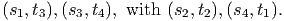
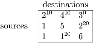
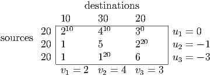
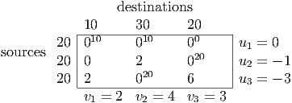
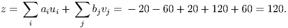
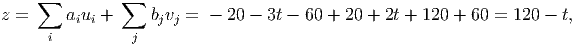
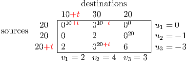

We calculate zij = cij - yi + yj for arcs nonbasic with xij = 0:
|
|
| arc | zij |
|
|
| (2,4) | 12 |
| (4,1) | 18 |
| (4,2) | 22 |
| (6,5) | -31 |
|
|
| |
We also examine the arc nonbasic at its upper bound: w15 = -c15 + y1 -y5 = -25 + 60 + 0 = 35.
So the only candidate to enter the basis is arc (6,5). This creates a cycle including arcs (1,6),
(1,4), and (4,5). Calculate the change in flow around this cycle:
The network simplex pivot chooses t = 5, and x65 replaces x45 in the basis, leading to
updated primal and dual variables:
We calculate zij = cij - yi + yj for arcs nonbasic with xij = 0:
|
|
| arc | zij |
|
|
| (2,4) | 12 |
| (4,1) | 18 |
| (4,2) | 22 |
| (4,5) | 31 |
|
|
| |
We also examine the arc nonbasic at its upper bound: w15 = -c15 + y1 -y5 = -25 + 29 + 0 = 4.
Since all the reduced costs zij and wij are nonnegative, we are optimal.
6.6.54 (lectures 16 and 17): Assume all edge lengths are positive. Hint: one approach is to
map each node in the shortest path problem to one source node and one destination node in
the transportation problem. You then have to choose the edge lengths so that the
solution to the assignment problem gives an optimal solution to the shortest path
problem.
Solution:
We have a graph with n nodes, and we want to find the shortest path from node 1 to node n
when the graph has edge lengths ce for the edges in the graph. We construct an assignment
problem with n sources s1,…,sn, and n sinks t1,…,tn.
The aim is to have edges in the optimal assignment (si,tj) with i≠j correspond
to edges in the shortest path in the original graph. If the assignment uses the
“horizontal” edge (si,ti) for some i then we regard i as not being on the shortest
path.
We will need to ensure some edges don’t show up in the chosen assignment, so we
need a big-M. We choose M to be the sum of all the edge lengths in the original
graph.
For example, if n = 4 and the shortest path is 1 - 3 - 4 then we would like to return the
assignment:

We define the edge lengths in the assignment problem as follows:
- (sn,t1) has length 0, so we pick this edge.
- (si,t1) has length M for i = 1,…,n - 1 so we don’t pick any of these edges.
- If edge (i,j) is in the original graph with length cij then edges (si,tj) and (sj,ti)
in the assignment problem have length cij (with the exception of edges (si,t1) for
i = 1,…,n.)
- Edges (si,ti) have length 0 for i = 2,…,n - 1, so there is no cost for node i not
appearing on the path.
- Edge (sn,tn) has length M, so we don’t pick this edge.
- Edges (si,tj) with i≠j have length M if edge (i,j) is not in the original graph, so
we don’t pick any of these edges.
Then any feasible solution to the assignment problem with cost smaller than M corresponds
to a path from 1 to n in the original graph, possibly together with one or more cycles.
We can improve the assignment solution by choosing “horizontal” edges instead
of the edges in any cycle. So the optimal assignment corresponds to a shortest
path.
(Lecture 18) Use the augmenting path algorithm of lecture 18 to find the maximum flow from
node 1 to node 6 in the graph, where the edge capacities are indicated.
Solution:
We augment using the augmenting path with fewest edges. Initially, there are 2
paths with 3 edges, so we push 5 units along 1 - 2 - 4 - 6 and 4 units along
1 - 3 - 5 - 6. This gives the updated flows, with the labels on each arc represent
(capacity,flow).
We use breadth first search to find another augmenting path:
- We can push flow from 1 to 3.
- We can push flow from 3 to 2 or 4.
- We can push flow from 2 to 4, and from 4 to 5.
- We can push flow from 5 to 6.
Thus, we’ve found an augmenting path with 4 edges: 1 - 3 - 4 - 5 - 6. We can push 1 unit
down this path, giving an updated flow
We use breadth first search to find another augmenting path:
- We can push flow from 1 to 3.
- We can push flow from 3 to 2
- We can push flow from 2 to 4.
- We can push flow from 4 to 5.
- We can push flow from 5 to 6.
Thus, we’ve found an augmenting path with 5 edges: 1 - 3 - 4 - 5 - 6. We can push 1 unit
down this path, giving an updated flow
No more augmenting paths exist, so the maximum flow is 11. There are 2 saturated cuts with
capacity 11:
- {1, 2, 3} on one side, {4, 5, 6} on the other.
- {1, 2, 3, 4} on one side, {5, 6} on the other.
(Lectures 16 and 18) A transportation problem has optimal transportation tableau

- Find an optimal dual solution, and verify it is dual feasible.
- Assume the supply at source 3 changes to 20+t and the demand at destination 1
changes to 10+t. Use the dual solution to determine the change in the optimal
value for small values of t. For what range of t is your answer accurate?
Solution:
- Calculate dual variables:

Calculate reduced costs cij - ui - vj:

Thus, we are dual feasible and hence optimal.
This is the problem considered in Lecture 16, and the optimal reduced costs here agree
with those found in Lecture 16.
- The dual objective function value is

If we keep the same u and v and set a3 = 20 + t, b1 = 10 + t, then the value changes
to

so the optimal value decreases by t.
In a sensitivity analysis setting, we are looking to modify the value of the basic variables
to accomodate this change in supplies and demands. The path from source 3 to
destination 1 is s3 → d2 → s1 → d1, indicated below in the transportation
tableau:

We need to keep xij ≥ 0 for all edges for the given BFS to be optimal. Thus the
rate of change in the objective function value given above is accurate for
-10 ≤ t ≤ 10.